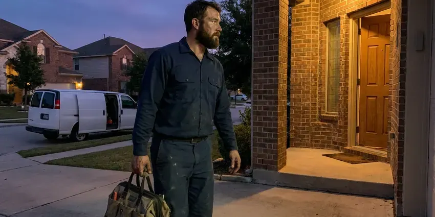

Copper Pipe Leak Repair in Thornton, CO
Green stains, a damp wall or a hiss behind the drywall? GFR Plumbing fixes copper pipe leaks in Thornton, CO.
- Nearby Pipe Inspected
- Type L Copper Used
- Repipe Options When Needed
- Small Drywall Openings
Copper Leak in Thornton, CO?
You get a written price before we cut any copper.
Copper Pipe Leak Repair in Thornton, CO for Pinholes and Failed Joints
GFR Plumbing repairs pinholes in Type M pipe, failed solder joints and corroded fittings on copper water lines. A thermal camera comes out first. Moisture meters confirm what the camera shows, which keeps the drywall work afterward small and simple. You see the leak before we cut.
Work we handle every week:
- Lead-free soldering and press fitting repairs
- Water pressure, grounding and bonding checks on each call
- Pinhole, corrosion and burst line repair

Additional Plumbing Repair Services in Thornton, CO
We offer expert plumbing repair services across Thornton, CO to stop leaks, clear blockages, and keep every fixture working the way it should.


Customers
Why Choose GFR Plumbing for Copper Pipe Leak Repair in Thornton, CO?
Every repair ends with a pressure test. We watch the gauge. We bring the line back to working pressure and check each joint we touched, while checking the surrounding copper for signs of the next failure. We tell you about anything suspect.
- Quality Copper, We repair with Type L copper or press fittings so the repair outlasts the pipe around it.
- Precise Detection, Thermal imaging pinpoints hot and cold copper leaks without opening extra drywall.
- Warranty, Workmanship is warrantied in writing, and the parts carry their own warranty.
Citywide Coverage
From the center of Thornton out to the edge of town, we run copper leak calls daily. Distance does not change the price. The same leak search, the same written quote and the same pressure test go to every customer in our service area.
Experienced Team
Copper work looks simple until a joint is underheated. Bad solder fails. Our plumbers clean, flux and heat every joint properly, so each finished job is brought back to working pressure and checked.
Safety-First Approach
We use lead-free solder and approved fittings on every repair. Drinking water stays safe. All materials meet the plumbing code and drinking water standards, and every repair is pressure tested before any wall or ceiling is closed.
Trusted Certified Thornton Plumbing Services Professionals
At GFR Plumbing, we take pride in licensed, certified plumbing services throughout Thornton, CO. Credentials matter in this trade. Every repair, install and maintenance visit follows strict safety and quality rules, and the plumbers doing the work carry recognized industry credentials.
Call Us Now PHCC Plumbing Contractor Recognition
PHCC Plumbing Contractor Recognition Better Business Bureau (BBB) Accreditation
Better Business Bureau (BBB) Accreditation Angi Certified Pro
Angi Certified Pro ISO 9001 Quality Management Certification
ISO 9001 Quality Management CertificationCopper Leak Repair Jobs We Handle in Thornton, CO
Corrosion Leak Repair in Thornton, CO
Water can be hard on copper over time. Mountain homes in Colorado frequently rely on private wells, which may need treatment for iron, manganese, or natural minerals. Pitting ends in pinholes. We look at corrosion patterns on the pipe we remove, since the pattern often points to the cause. We address the cause where we can.

Copper Fitting and Valve Repair in Thornton
Angle stops, shutoff valves and copper fittings under sinks and behind toilets can weep or seize. Minerals jam them. Hard water buildup inside a valve can keep it from closing when you need it most, and quarter-turn valves go in to replace the old multi-turn stops. Every valve gets checked.
Preventive Copper Pipe Inspection in Thornton, CO
An inspection catches thin spots before they leak. It takes about an hour. We look at exposed copper for green crust and pitting, test static pressure, check the bond wire at the water heater and main, then scan suspect walls with a thermal camera on homes with a leak history. You get a written summary.
Slab Leak Detection and Repair in Thornton
Copper often runs under concrete slabs in Thornton homes. Settling soil stresses it. Rocky mountain ground makes trenching for sewer and water lines harder, and lines must be buried below the local frost depth. We use acoustic and thermal equipment to find the leak without breaking concrete to search, and the repair is either a small cut at the leak or a reroute through the walls that leaves the old line in the slab. We price both.
Pinhole Leak Repair in Thornton
Pinholes start inside the pipe where the copper wall pits and thins. The first sign is often a spot. They are small and easy to miss behind drywall, so we locate them with a thermal camera and moisture meter before cutting a single opening in the wall or ceiling. We replace the pitted length with Type L. Nearby pipe gets checked.
Commercial Copper Pipe Leak Services in Thornton, CO
In a commercial building, one copper leak can affect several tenants at once. Shutdowns need coordination. We isolate the smallest zone possible and repair the leak with press fittings or solder, working before opening or after close when the building has to stay running. Records are available for managers.
Corrosion-Related Leak Repair in Thornton
Corrosion thins copper from the inside. Mountain homes in Colorado frequently rely on private wells, which may need treatment for iron, manganese, or natural minerals. Look for blue-green spots. On exposed pipe you may see blue-green deposits at fittings, while hidden pipe usually announces itself with a small leak or a stain. We replace the corroded length. Then we talk about the cause.

Copper Leak Behind Walls in Thornton, CO
Small pinholes can suddenly widen and spray water into a wall or ceiling. Find the main valve. We help you shut off the water over the phone and send a plumber to locate and repair the leak, with a temporary repair first when the permanent fix needs more access. We tell you about wet drywall.
Copper Pipe Leak Repair Near Me in Thornton, CO
You want a plumber who shows up on time and fixes the leak in one trip. That is how we run copper calls. One plumber finds it, the same plumber repairs it, and you get a price on paper before any work begins.
Local matters on copper work because water chemistry changes from town to town. Pinholes run in clusters. We know which parts of town see the most pinhole leaks, which helps us spot the cause and suggest a fix that lasts.
GFR Plumbing at a Glance
- Licensed and insured plumbers serving Thornton, CO
- 24/7 emergency service with same-day scheduling
- Clear written estimates, no hidden fees
- 4.8-star rated by 750+ Colorado customers
Thornton Map
Thornton Information
- Population
- 144,922
- Area codes
- 303/720/983
- Service area
- Thornton and towns within a 40 mile drive
- Nearby
- Broomfield, Westminster, Commerce City, Lafayette
Many Thornton, CO homes have thin Type M copper installed decades ago, and treated water plus high pressure wears it down until it starts to leak. Mountain homes in Colorado frequently rely on private wells, which may need treatment for iron, manganese, or other minerals.
Talk to a Plumber
Reach out to GFR Plumbing for reliable plumbing work done by licensed pros in Thornton, CO.
Our Specialized Plumbing Services in Thornton, CO
At GFR Plumbing, we handle the full list of plumbing services across Thornton, CO. We go from leak detection all the way to full system installations, for homes and commercial buildings, and we do it quickly at a fair price. Take a look at our core services below:


How Our Copper Pipe Leak Repair Process Works in Thornton, CO
Here is how a copper leak repair runs from the first call to the last check of the gauge.
Book the Visit
Call (720) 727-9398 to describe the leak. Most visits happen same day or next.
Find the Cause
We locate the leak and check pressure and the copper nearby. You see what we find.
Fix It
We solder or press in new Type L copper with the right fittings.
Frequently Asked Questions About Copper Pipe Leak Repair in Thornton
A minor, accessible pinhole repair starts around $200. Hidden leaks cost more. Complex repairs like under-slab leaks can run past $2,000, depending on where the leak is, how bad it is and how much copper needs replacing. We price it after we find it.
Corrosion from the inside is the most common cause. Mountain homes in Colorado frequently rely on private wells, which may need treatment for iron, manganese, or natural minerals. High pressure adds to it. Excess water pressure, poor original soldering, a settling foundation that stresses joints can each cause a leak or make one more likely. It is usually a combination.
Yes. We put the labor warranty on paper. Copper pipe and fittings carry their own manufacturer coverage, so you are protected on both the materials and the work that went into installing them. The exact terms are on your quote.
The pipe wall wears through from the inside. Water chemistry drives it. Aggressive water, high velocity, excess pressure, poor original soldering and stray electrical current from grounding issues all erode the copper over time until a tiny hole opens. Hot lines get it worst.
Keep pressure in range. Test it yearly. Soften hard water, limit recirculation pump run time and get any green crust on fittings looked at early, while homes with older copper should have it checked every few years. Early repairs cost less.
We typically use Type L copper. It is heavier than Type M. Type L lasts longer than the Type M found in many older homes, while press fittings or a PEX transition get used when a torch is a bad idea. Every part is lead-free.
Shut off the main water valve. Then call (720) 727-9398. Turning off the main stops the damage while you wait, and opening a low faucet drains the pressure out of the line so the leak slows to a drip. Get anything important out of the way. We will walk you through it if needed.
If you have had repeated leaks, it is worth pricing. PEX resists that corrosion. PEX resists the corrosion and scale that cause copper pinholes and goes in quickly with fewer wall openings, which makes repiping with PEX a cost-effective long-term fix for homes with failing copper. You get both numbers.
What People Are Saying About Our Plumbing Experts?

Brian W.
I smelled gas behind the dryer and called right away. The plumber found a corroded flex connector, replaced it, and pressure tested the whole line before turning the gas back on. He let me watch the gauge hold steady for fifteen minutes.
Gas Line Repair · Westminster, COGreg S.
I manage a small strip center with six tenants. GFR Plumbing handles our annual backflow testing and fixed a recurring clog in the shared sewer line that had been backing into the nail salon. Their reports come in clean and on time.
Commercial Plumbing · Commerce City, CO
Lisa C.
Water was pouring out from under the washing machine on a holiday weekend. GFR Plumbing talked me through closing the valves over the phone and had a plumber at the house within ninety minutes. It was a burst fill hose.
Emergency Plumbing · Westminster, CO
Tyler J.
We bought a taller comfort height toilet for my dad, who just had knee surgery. The plumber pulled the old one, found the flange was cracked, and replaced it before setting the new bowl. Took about two hours.
Toilet Installation · Westminster, COCarlos V.
Our house still had galvanized pipe, and upstairs the shower was a trickle. The crew repiped everything in PEX over three days and patched every drywall hole before they left. The pressure difference is night and day.
Repiping · Broomfield, CO
Jessica T.
We were adding a gas range in a kitchen remodel and needed a new line run from the meter. The plumber pulled the permit, ran the pipe through the crawl space, and had it inspected and approved within the week.
Gas Line Repair · Denver, CO